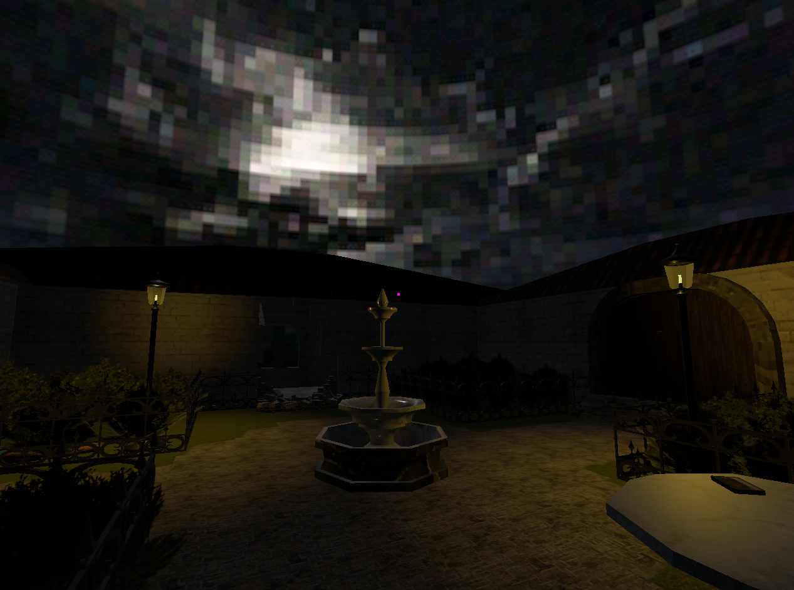
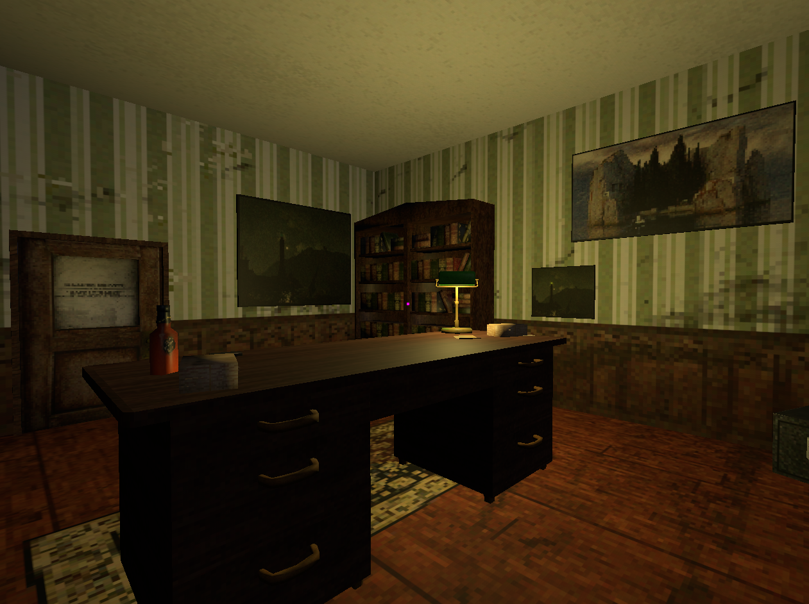
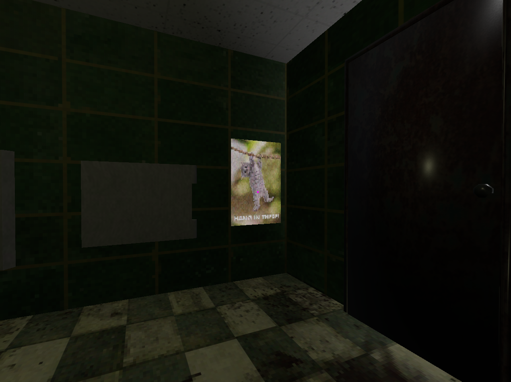

Henry Tripp Barrick
Patient 004
The Goals
This game was developed for the first part of my capstone series. For it our teams were all given three prompts, and asked to choose one to make a game around. I have forgotten the other two, but the one our team chose was "escape room". After I found a team, we pretty quickly came up with the idea of being in a haunted asylum and attempting to escape through various puzzles. The development cycle here was ~3-4 weeks and we had around 10 people on the team (Since it was a while ago, I don't remember exactly and don't care to fact check). I ended up doing a lot of 3D art and was the sole programmer for this project. We made this game in Godot due to mine and other people's familiarity working in the engine.
The Development
The development for this game started pretty smoothly. People were tasked with starting work on the various aspects of the game they were assigned to (sound, writing, etc.) and progress was going along smoothly. We had a good amount of puzzles ideas starting out that seemed pretty promising and interesting. I had initially a pretty massive work session where I finished a large amount of assets needed for the office room (seen above) in a pretty short amount of time. This was primarily aided by having a breath of fresh air from doing solely naturalistic cliff faces as I was working on this game in tandem with Moth Game. I got some of the more simplistic coding out of the way as well, such as moving and interacting. Interacting was done in (I hope) a pretty smart way using only the metadata tab that can be applied to an object to function as a pseudo-variable which allowed me to avoid adding scripts to every single interactable object in the game. There is only a total of two scripts in this project, one which manages the player and one which manages the overall game.
As our deadline got closer, we eventually had to start crunching a bit harder. Given that everyone had other courses to do (I personally had 3 other classes including a senior seminar for my other major) this was unfortunate but understandable, especially so since this crunch needed to happen the week before finals weeks. We had a couple pretty promising looking areas, but some of the areas in the game were less visually appealing or interesting gameplay wise because of this. A good amount of puzzles needed to have their ideas shortened down to be reasonable to add within our time limit. This also caused an unfortunate disconnect between the story as initially written and the story as presented in game. A lot of the writing and voice lines were added early to mid in development but only implemented in the last week or so of development, so we didn't really have the time to make sure everything was clear from a story perspective.
The Lessons
This is probably the first project I am actually somewhat proud of, more so than Moth Game which finished development roughly 1 day before this one did. As my first (in the context of a more full game) group game development project there are a good amount of lessons to take in regards to how to work with other people. it is really important to be actively connected with the people you're developing with, especially in art since it takes some work to make sure everything is stylistically consistent. Having someone to function as a dedicated producer was very nice in dealing with this. I would imagine in a smaller project where you have 2-3 people working on it this might be less necessary but for our group size it was very nice to have and keep everything coordinated.
Art wise I found myself enjoying working on this quite a bit more, at least for the first bit. I tend to enjoy hard surface modeling the most so being able to do a lot of that for this project was very nice and refreshing. Refreshing since my most recent 3D modeling work was working on large swathes of naturalistic environments. I think ultimately the lesson here is that the retro style used for the game tends to be more visually cohesive when working in interior environments, at least at my current skill level. In addition I think that providing variety in how art work is done is important for my own personal work flow. Near the end of my work week on interior props, I again started to get a bit tired which slowed my work speed. I luckily had programming to fall back on which was a change that helped reenergize me, but I think that personally I function best when given a variety of assets to work on. I also think I get better at modeling everytime I finish a project since I always find out how to solve some bug or do something easier. For me this time, I eventually learned to use Blender's snap to pixels feature of the UV Editing tab to make everything look a lot cleaner.